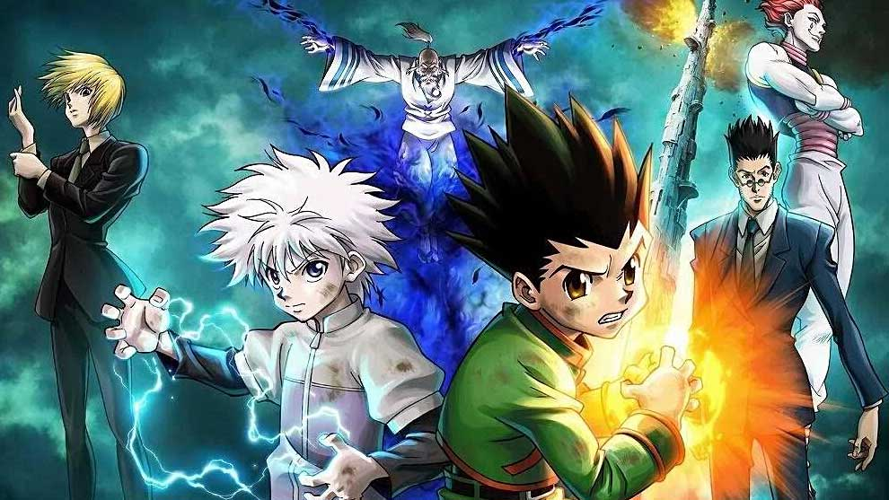

AnimationPlays

Profile
Since its debut in 1998, Hunter x Hunter has introduced some very powerful characters. Here are ten of the strongest fighters in the series.
Since 1998, Hunter x Hunter has been one of Shonen Jump’s most popular series. It has produced a manga as well as two anime and movie adaptations. Despite some frequently prolonged hiatuses, the ongoing manga and is currently up to 390 chapters.
Over the years, the series has introduced some exceptional characters like protagonists Gon Freecss and his friend Killua Zoldyck. Furthermore, there are plenty of individuals that have performed feats that make them some of the strongest fighters in anime. Without further ado, here is a list of the strongest characters in Hunter x Hunter. Fair warning there will be some manga spoilers.
Updated on July 6th, 2021, by Richard Keller: Hunter X Hunter is typical of other shonen anime. Its main protagonist is a young adolescent who does whatever he can to become a member of a Hunter group. What makes it different than other series is the unique way its characters are portrayed and how well they control their Nens to obtain their powers.

In general, the Chimera Ants aren't that powerful. They're certainly voracious and eat anything in their path. That includes humans. Particularly those with unique powers.Hence, the reason these colonies can gain the powers they need.
Some groups of Chimera Ants have become so powerful due to their devouring that they've established a human-like form. As a result of this, they are one of the first set of magical beasts that are considered for quarantine.

Hunter X Hunter's protagonist, Gon Freeces, is a powerful young man. He has the Nen of Enchantment, which enhances his strength and allows him to rapidly heal from injuries. Unfortunately, these powers are muted due to his lack of responsibility.
Like other pre-teens, Gon is more concerned about his ego. He wants to gain as much power as possible in little time. Thus, he recklessly uses his abilities, especially when he's angry. He could be an amazingly useful Hunter if he had some control.

Gon's friend, Killua Zoldyck, is similar in personality to Marvel's Wolverine. On one side of the coin, this Hunter X Hunter personality is a one-person killing machine. On the other side, he's incredibly loyal and does what he can to save his friends.
For instance, Killua was able to utilize his sibling's Nen of healing to cure a dying.He has also pushed himself in battles against the Chimera Ants and the video game Greed Island. Though his power to convert his aura's energies into electricity is strong, it's his dedication that is Killua's true strength

Others tend to take Kurapika for granted. After all, the character's Nen is to generate various chains from the right hand. However, antagonists don't realize what these do.
Kurapika's ring finger contains a ball at the end of its chain for defensive moves and dowsing for water and precious materials. The middle finger chain is used to incapacitate others. Kurapika's little finger shouldn't be underestimated. The chain on this one can stab at an enemy's heart.

Feitan Portor is another Hunter X Hunter character similar to a Marvel personality— this time it's the Hulk. No matter the incarnation, when the Green Behemoth gets angry he becomes stronger. In the case of Feitan, it's his injuries that make him stronger.
This is a useful tool as long as he can withstand the hurt. From this Nen, he's created a miniature sun that burns anyone around him. On top of this, Feitan is incredibly swift. So much so that he can leave an afterimage of himself during battle.

Zeno Zoldyck may be old but that doesn’t stop him from being one of the most lethal assassins in Hunter x Hunter. His physical strength far exceeds his age. Additionally, Zeno's speed and fighting prowess were enough to put Chrollo Lucifer, the leader of the Phantom Troupe, on the defensive.
As a Transmuter, he manipulates his Nen aura and changes its shape to form dragon-like constructs. While it is mainly an offensive move, Zeno also uses this technique to transport himself and others across vast distances. With his Dragon Dive technique, he can create hundreds of aura dragons that rain down like meteors and cause widespread devastation. Overall, not bad for an old man.

With an alias like the Grim Reaper, Hisoka Morow is the last person you want to cross paths with. While not exactly evil, Hisoka takes extreme satisfaction in fighting and killing strong opponents. As a former member of the Phantom Troupe, Hisoka ranked third in terms of pure physical strength.
His Nen ability is the versatileBungee Gum, which gives his aura the properties of rubber and gum. Along with his other ability of Texture Surprise, he can recreate missing limbs and simulate the appearance of human skin. In the manga, Hisoka manages to bring himself back to life after losing a match against Chrollo. Considering that Nen becomes stronger after death, this character's threat level has never been higher.

As the current head of the Zoldyck family, Silva is a dangerous man. Much like his son Killua, he is immune to even the most lethal poisons and can perform superhuman feats. One example is how he jumped from the sky and literally got the drop on a Chimera Ant squadron leader, crushing its head with a single blow.
Silva has also defeated a member of the Phantom Troupe, further supporting that he is not to be taken lightly. In terms of his Nen ability, he is an Emitter and a Transmuter with some expertise as an Enhancer. Using his Nen, Silva converts his aura into large orbs of destructive energy.

As the leader of the Phantom Troupe, Chrollo is one of the strongest characters in Hunter x Hunter. He fought both Silva and Zeno while holding back and still survived. This speaks volumes of his power. Even Zeno admits that, if Chrollo fought seriously, even he would have trouble defeating him.
As a Specialist, Chrollo is a powerful Nen user who removes other's abilities and uses them as his own. In the past, he could only use one ability at a time. In the manga, he overcomes this weakness and can use two abilities simultaneously. Chrollo is also the first character to mortally wound Hisoka.

From the moment that Shaiapouf and the other Royal Guards were born, they possessed incredible power. In a short period, he developed an aura output that surpassed even that of Isaac Netero, the chairman of the Hunter Association. Shaiapouf possesses immense physical strength and can run and fly at supersonic speeds. His powers include using scale dust to hypnotize humans, turning people into Chimera Ants, and even bestowing Nen abilities onto others.
Shiaiapouf can also create copies of himself, decreasing in size with every copy he makes. By creating thousands of miniature duplicates, he can infiltrate even the most secure locations and spy on his enemies without detection.

In terms of both appearance and power, Menthuthuyoupi is nothing short of a monster. Unlike other human-Chimera Ant hybrids, he is a fusion between a Chimera Ant and a Magical Beast. This gives him the unique ability to control and modify any part of his body. He can grow extra arms and eyes, create animal wings to fly, and morph his limbs into blades.
When enraged, Youpi pressurizes and stores his aura to gather large quantities of energy. Once he reaches his limit, he unleashes the power in a massive explosion. After learning to control his rage, Youpi channels it into a new and more powerful transformation that easily overpowers his enemies.

Compared to the rest of the Royal Guard, Neferpitou is undoubtedly the strongest of the three. They are so strong that they can travel great distances in a single leap. Neferpitou's aura is so terrifying that it instills fear in even the strongest of Hunters.
The character's Nen ability allows them to summon different types of puppets. They either heal wounds through advanced surgery or take control of others. Neferpitou’s desire to serve Chimera Ant King Meruem is so strong that even after their death, one of their Nen's puppets continued to exist. By manipulating their corpse, the puppet allowed Neferpitou to continue fighting for the sake of protecting Meruem.

Despite his young age, Gon’s mastery of Nen, along with his Jajanken ability, makes him a strong fighter. After his friend Kite is captured and killed by the Chimera Ants, he becomes consumed by revenge. This changes not just his personality but his aura as well. After confronting Neferpitou, who was responsible for killing Kite, Gon made a Nen Contract to increase his strength.
By sacrificing his lifeforce and natural talents, his body matured to a state where he could beat Neferpitou. As an adult, Gon becomes just as powerful as Meruem. As a result, Neferpitou is powerless to stop him from crushing his head in just two blows.

As chairman of the Hunter Association, Netero spent years training both his body and his Nen ability to their peaks. In his prime, he was considered the most powerful Hunter and Nen user in the world. Netero is also the fastest character, surpassing even Meruem's speed, despite being over 100 years old.
His Nen ability allows him to summon the 100-Type Guanyin Bodhisattva. This construct unleashes over 1000 devastating blows in under a minute. Netero's most powerful move, the Zero Hand, drains his life force to fire a beam of immense destructive energy. Although he may have lost against Meruem, he is the first and only person to make him experience true fear.

From the moment of his birth, Meruem was already more powerful than any other character in Hunter x Hunter. He is extremely intelligent, able to process thousands of possible scenarios in mere seconds, and was strong enough to push back against the hands of Netero’s 100-Type Guanyin Bodhisattva.
Meruem's body was also durable enough to allow him to survive the equivalent of a nuclear explosion, although it did reduce him to a near-death state. He has the power to become stronger by consuming Nen users and obtaining their abilities in the process. He displayed this when he absorbed Shaiapouf's and Youpi’s powers, which he uses on a more advanced scale.